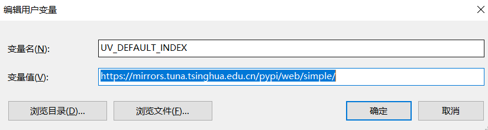

使用 uv 来管理 Python
uv 是一款用 Rust 编写的极速 Python 包管理工具，它集成了包管理、虚拟环境管理、依赖解析和 Python 版本控制等多种功能，旨在简化并统一 Python 的开发工作流。
下面的表格清晰地总结了 uv 的核心功能以及对应的命令示例，你可以快速了解它能为你做什么。
| 主要功能 | 命令示例 | 核心作用与优势 |
|---|---|---|
| 📦 包管理与项目管理 | uv init, uv add requests, uv sync |
初始化项目，管理pyproject.toml和uv.lock锁文件，确保依赖环境一致和可复现。 |
| 🚀 极速安装 | uv pip install numpy pandas |
作为 pip 的直接替代品，凭借 Rust 底层和并行技术，安装速度比 pip 快10-100倍。 |
| 🐍 Python 版本管理 | uv python install 3.12, uv python list |
轻松安装和切换不同版本的 Python 解释器，无需依赖其他工具。 |
🧰 工具管理 (uvx) |
uvx cowsay "Hello", uv tool install ruff |
像 pipx 一样，在独立隔离环境中一键运行或安装 Python 命令行工具（如 ruff, black），避免污染全局环境。 |
| ⚙️ 虚拟环境与运行 | uv run python main.py |
自动创建并管理虚拟环境。无需手动激活，直接运行脚本，保证环境一致性。 |
🛠️ 从安装到上手
安装 uv
在 Linux 或 macOS 上，可以通过官方脚本安装：
curl -LsSf https://astral.sh/uv/install.sh | sh或使用 wget
wget -qO- https://astral.sh/uv/install.sh | sh在 Windows 上，可以使用 PowerShell 安装：
powershell -ExecutionPolicy ByPass -c "irm https://astral.sh/uv/install.ps1 | iex"使用
安装个人常用包到系统环境
uv pip install numpy pandas matplotlib==3.8.4 ipykernel seaborn scipy scienceplots openpyxl mplfonts --system初始化 mplfonts 库，以解决方块字问题
mplfonts init配置国内加速
创建环境变量
变量名为
UV_DEFAULT_INDEX变量值为
https://mirrors.tuna.tsinghua.edu.cn/pypi/web/simple/
问题
1. uv tool install 安装在哪里？
uv tool install 会将工具安装到 uv 的工具缓存目录 中，而不是当前激活的 Conda 环境或系统 Python 环境的 site-packages 目录。具体来说：
-
工具安装目录
（默认）：
-
在 Windows 上，通常是：
C:\Users\<你的用户名>\AppData\Roaming\uv\tools\<工具名>\例如你安装
labelme，路径就是：C:\Users\<你的用户名>\AppData\Roaming\uv\tools\labelme\ -
在 macOS / Linux 上，通常是：
~/.cache/uv/tools/<工具名>/
-
-
依赖存放目录
-
uv 会为每个工具创建一个独立的虚拟环境，其依赖（如
labelme所需的PyQt5、opencv-python等）会安装在该工具目录下的虚拟环境中，例如：C:\Users\<你的用户名>\AppData\Roaming\uv\tools\labelme\venv\Lib\site-packages\
-
-
命令行入口：
- uv 会在其自身的
Scripts目录（例如C:\Users\<你的用户名>\AppData\Roaming\uv\Scripts\）中创建一个 符号链接（或批处理文件），指向工具的可执行文件。这样你可以在命令行直接运行labelme，而无需指定完整路径。
简单来说：
uv tool install会把工具及其所有依赖都安装在 uv 自己的独立目录里，和你当前的 Conda 环境是分开的。 - uv 会在其自身的
2. 会与现有 conda 环境冲突吗？
默认情况下，不会直接冲突。因为：
- uv 工具安装在独立目录，不会污染 Conda 环境的
site-packages。 - 你在 Conda 环境中用
pip install labelme和用uv tool install labelme是两套完全独立的安装。